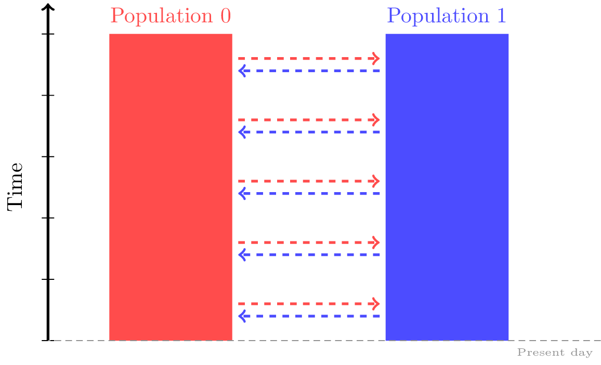
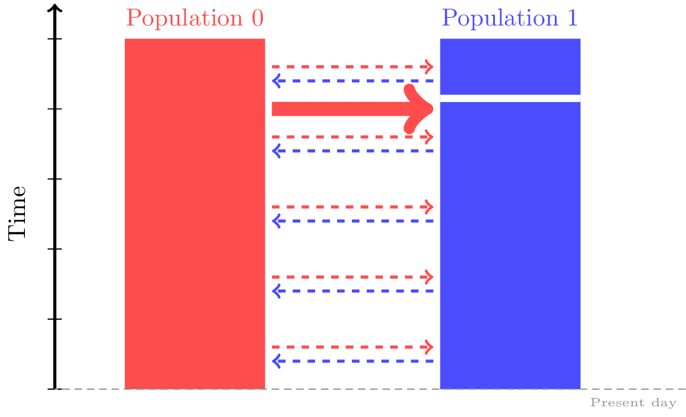
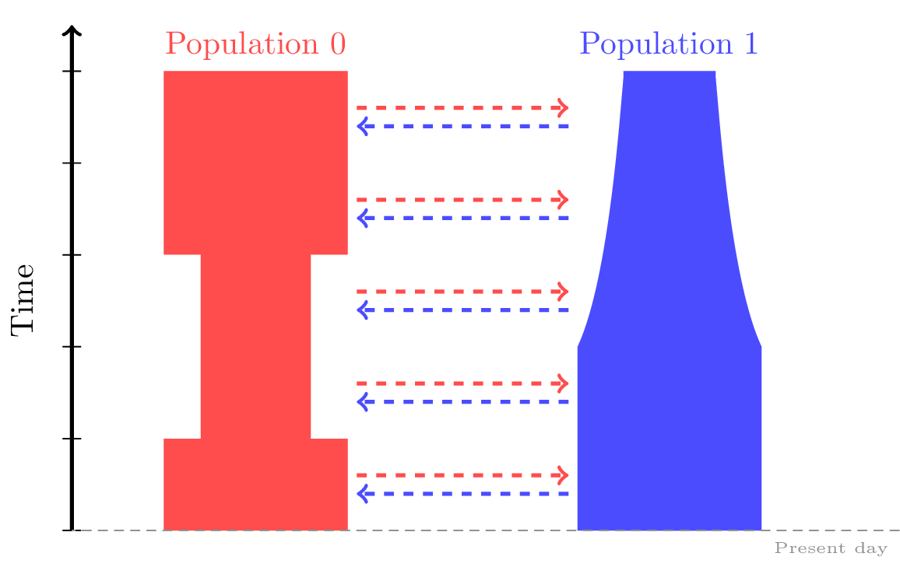

PORTING IN PROGRESS: Tutorial¶
Warning
The documentation on this page is from the pre-1.0 version of msprime and is currently being ported to the new format.
This is the tutorial for the Python interface to the msprime
library. Detailed PORTING IN PROGRESS: API is also available for this
library. An ms compatible command line interface
is also available if you wish to use msprime directly within
an existing work flow.
Please see the tskit documentation for
more information on how to use the
tskit Python API
to analyse simulation results.
If this is your first time using msprime, head to the Getting started
section to learn how to specify basic models of recombination and mutation.
Next, the Specifying Demography section will show you how to add demographic models
and population structure into your simulations.
The Dead sections section covers more specific
features of msprime, including ancient sampling,
hybrid forward-backward histories and full ARG recording.
Getting started¶
Todo
It’s not clear whether we should keep a version of this content here in the msprime repo or we should convert it into a “getting started with tskit” tutorial at tskit.dev/tutorials.
Tree sequences - the data structure¶
msprime outputs simulated datasets in the tree sequence format.
This is an encoding of a complete genealogy for a sample of chromosomes at
each chromosomal location.
They offer a few benefits to population geneticists compared with
traditional genetic file formats:
They can store large simulated datasets extremely compactly. (Often many times smaller than VCFs for real-sized datasets!)
As they hold rich detail about the history of the sample, many important processes can be observed directly from the tree structure. So a tree sequence is often more informative than raw genotype/haplotype data, even though it is also more compact.
They can be queried and modified extremely quickly. This enables quick calculation of many important population statistics.
If you’ve never dealt with tree sequences before, you may wish to read through some of the documentation for
tskit, a Python package with a bunch of useful tools for working with tree sequences.
A basic example¶
Running simulations is very straightforward in msprime.
Here, we simulate the coalescent for a sample of size six
with an effective population size of 1000 diploids:
import msprime
ts = msprime.simulate(sample_size=6, Ne=1000)
The msprime library uses
tskit
to return the simulation result as a
tskit.TreeSequence object.
This provides a very
efficient way to access the correlated trees in simulations
involving recombination.
Using the tskit.TreeSequence.num_trees attribute, we can see
that there is only a single tree in our simulated tree sequence:
print("Number of trees in tree sequence:", ts.num_trees)
# 1
This is because we have not yet provided a value for the recombination rate, and it defaults to zero.
We can access this tree using the first()
method, and can draw a simple depiction of the tree to the terminal
using the draw() method:
tree = ts.first()
print(tree.draw(format="unicode"))
# 10
# ┏━━┻━┓
# ┃ 9
# ┃ ┏━┻━┓
# 8 ┃ ┃
# ┏┻┓ ┃ ┃
# ┃ ┃ ┃ 7
# ┃ ┃ ┃ ┏━┻┓
# ┃ ┃ ┃ ┃ 6
# ┃ ┃ ┃ ┃ ┏┻┓
# 3 5 0 4 1 2
Sequence length¶
Because we haven’t yet specified a sequence length, our simulated sequence will have length 1:
ts.sequence_length
# 1.0
It is usually most convenient to set the sequence length to be
the number of nucleotide bases in the desired simulated sequence.
We use the length argument to specify this:
ts = msprime.simulate(sample_size = 6, random_seed = 1, length = 1000)
print(ts.sequence_length)
# 1000.0
Effective population size¶
Recall that each tree sequence has an equivalent representation as a set of tables. Let’s have a look at one of these tables now:
print(ts.tables.nodes)
# id flags population individual time metadata
# 0 1 0 -1 0.00000000000000
# 1 1 0 -1 0.00000000000000
# 2 1 0 -1 0.00000000000000
# 3 1 0 -1 0.00000000000000
# 4 1 0 -1 0.00000000000000
# 5 1 0 -1 0.00000000000000
# 6 0 0 -1 0.07194744353492
# 7 0 0 -1 0.61124301112428
# 8 0 0 -1 0.73124726040958
# 9 0 0 -1 0.91078323219376
# 10 0 0 -1 1.32301250012150
The first six nodes with time=0.0 correspond to the samples. All other nodes correspond to ancestors of the samples, and so have positive times.
Note
The ‘time’ of a node records how long ago the node was born.
Since msprime is a coalescent simulator, it looks “backwards in time”,
i.e., all ‘time’ attributes in msprime are measured in units of time
ago.
The reason why the node times in our simple example are so small is because, by default,
msprime assumes a constant (diploid) effective population size of Ne = 1,
which is equivalent to measuring time in units of Ne generations.
While this scaling can be useful when comparing simulations against analytic results
from coalescent theory, it’s often simpler to think of time in units of generations
backwards-in-time. We can do this by specifying our desired
effective population size using the Ne input into simulate:
ts = msprime.simulate(sample_size = 6, random_seed = 1, Ne = 10000)
print(ts.tables.nodes)
# id flags population individual time metadata
# 0 1 0 -1 0.00000000000000
# 1 1 0 -1 0.00000000000000
# 2 1 0 -1 0.00000000000000
# 3 1 0 -1 0.00000000000000
# 4 1 0 -1 0.00000000000000
# 5 1 0 -1 0.00000000000000
# 6 0 0 -1 719.47443534915067
# 7 0 0 -1 6112.43011124283566
# 8 0 0 -1 7312.47260409581213
# 9 0 0 -1 9107.83232193760159
# 10 0 0 -1 13230.12500121500307
Recall that under the coalescent model, each simulated ancestral node represents a coalescence event at which two lineages converge. These coalescences should occur less frequently in a larger population. As expected, rescaling our effective population size has also rescaled our coalescence times by the same factor!
Hopefully, you can already see that simulations with msprime can
help us clarify our intuition about how the coalescent model works.
Recombination¶
Simulating the history of a single locus is a very useful, but we are most
often interested in simulating the history of our sample across large genomic
regions that are under the influence of recombination. The msprime API is
specifically designed to make this easy and efficient,
and supports both uniform and variable models of recombination.
By default, recombination in msprime is simulated under an infinite sites model.
The sequence_length parameter is a floating point number, so recombination (and mutation) can
occur at any location along the sequence.
To learn how to use a finite sites model instead, see the
Finite-site recombination section.
Uniform recombination¶
To simulate with a uniform recombination rate, we specify two extra inputs to
msprime.simulate(): a sequence_length, usually specified as a number of bases,
and a recombination_rate, specified as the rate of crossovers per unit of
length per generation.
Here, we simulate a tree sequence across over a 10kb region with a recombination rate of \(2 \times 10^{-8}\) per base per generation, and with a diploid effective population size of 1000:
ts = msprime.simulate(
sample_size=6, Ne=1000, length=1e4, recombination_rate=2e-8)
We’ll then use the tskit.TreeSequence.trees()
method to iterate over the trees in the sequence. For each tree
we print out its index (i.e., its position in the sequence) and
the interval the tree covers (i.e., the genomic
coordinates which all share precisely this tree) using the
index and interval attributes:
for tree in ts.trees():
print("-" * 20)
print("tree {}: interval = {}".format(tree.index, tree.interval))
print(tree.draw(format="unicode"))
# --------------------
# tree 0: interval = (0.0, 6016.224463474058)
# 11
# ┏━━┻━━┓
# ┃ 10
# ┃ ┏━━┻━┓
# ┃ ┃ 9
# ┃ ┃ ┏━┻┓
# ┃ 7 ┃ ┃
# ┃ ┏┻┓ ┃ ┃
# ┃ ┃ ┃ ┃ 6
# ┃ ┃ ┃ ┃ ┏┻┓
# 3 0 1 2 4 5
#
# --------------------
# tree 1: interval = (6016.224463474058, 10000.0)
# 10
# ┏━━┻━━┓
# 9 ┃
# ┏━┻┓ ┃
# ┃ ┃ 8
# ┃ ┃ ┏━┻┓
# ┃ ┃ ┃ 7
# ┃ ┃ ┃ ┏┻┓
# ┃ 6 ┃ ┃ ┃
# ┃ ┏┻┓ ┃ ┃ ┃
# 2 4 5 3 0 1
Thus, the first tree covers the first 6kb of sequence and the second tree covers the remaining 4kb. We can see that these trees share a great deal of their structure, but that there are also important differences between the trees.
Warning
Do not store the values returned from the
trees() iterator in a list and operate
on them afterwards! For efficiency reasons tskit uses the same
instance of tskit.Tree for each tree in the sequence
and updates the internal state for each new tree. Therefore, if you store
the trees returned from the iterator in a list, they will all refer
to the same tree.
Non-uniform recombination¶
The msprime API allows us to quickly and easily simulate data from an
arbitrary recombination map.
To do this, we can specify an external recombination map as a
msprime.RecombinationMap() object.
We need to supply a list of positions in the map, and a list showing rates
of crossover between each specified position.
In the example below, we specify a recombination map with distinct recombination rates between each 100th base.
# Making a simple RecombinationMap object.
map_positions = [i*100 for i in range(0, 11)]
map_rates = [0, 1e-4, 5e-4, 1e-4, 0, 0, 0, 5e-4, 6e-4, 1e-4, 0]
my_map = msprime.RecombinationMap(map_positions, map_rates)
# Simulating with the recombination map.
ts = msprime.simulate(sample_size = 6, random_seed = 12, recombination_map = my_map)
The resulting tree sequence has no interval breakpoints between positions 400 and 700, as our recombination map specified a crossover rate of 0 between these positions.
for tree in ts.trees():
print("-" * 20)
print("tree {}: interval = {}".format(tree.index, tree.interval))
print(tree.draw(format="unicode"))
# --------------------
# tree 0: interval = (0.0, 249.0639823488891)
# 11
# ┏━━┻━━┓
# ┃ 9
# ┃ ┏━┻━┓
# 8 ┃ ┃
# ┏┻┓ ┃ ┃
# ┃ ┃ ┃ 7
# ┃ ┃ ┃ ┏┻┓
# ┃ ┃ 6 ┃ ┃
# ┃ ┃ ┏┻┓ ┃ ┃
# 2 5 0 1 3 4
#
# --------------------
# tree 1: interval = (249.0639823488891, 849.2285335049714)
# 12
# ┏━━━┻━━━┓
# ┃ 11
# ┃ ┏━━┻━┓
# ┃ 9 ┃
# ┃ ┏━┻━┓ ┃
# ┃ ┃ 7 ┃
# ┃ ┃ ┏┻┓ ┃
# ┃ 6 ┃ ┃ ┃
# ┃ ┏┻┓ ┃ ┃ ┃
# 5 0 1 3 4 2
#
# --------------------
# tree 2: interval = (849.2285335049714, 1000.0)
# 12
# ┏━━┻━━┓
# ┃ 11
# ┃ ┏━━┻━┓
# ┃ ┃ 10
# ┃ ┃ ┏━┻┓
# ┃ ┃ ┃ 7
# ┃ ┃ ┃ ┏┻┓
# ┃ 6 ┃ ┃ ┃
# ┃ ┏┻┓ ┃ ┃ ┃
# 5 0 1 2 3 4
A more advanced example is included below. In this example we read a recombination map for human chromosome 22, and simulate a single replicate. After the simulation is completed, we plot histograms of the recombination rates and the simulated breakpoints. These show that density of breakpoints follows the recombination rate closely.
import numpy as np
import scipy.stats
import matplotlib.pyplot as pyplot
def variable_recomb_example():
infile = "hapmap/genetic_map_GRCh37_chr22.txt"
# Read in the recombination map using the read_hapmap method,
recomb_map = msprime.RecombinationMap.read_hapmap(infile)
# Now we get the positions and rates from the recombination
# map and plot these using 500 bins.
positions = np.array(recomb_map.get_positions()[1:])
rates = np.array(recomb_map.get_rates()[1:])
num_bins = 500
v, bin_edges, _ = scipy.stats.binned_statistic(
positions, rates, bins=num_bins)
x = bin_edges[:-1][np.logical_not(np.isnan(v))]
y = v[np.logical_not(np.isnan(v))]
fig, ax1 = pyplot.subplots(figsize=(16, 6))
ax1.plot(x, y, color="blue")
ax1.set_ylabel("Recombination rate")
ax1.set_xlabel("Chromosome position")
# Now we run the simulation for this map. We simulate
# 50 diploids (100 sampled genomes) in a population with Ne=10^4.
tree_sequence = msprime.simulate(
sample_size=100,
Ne=10**4,
recombination_map=recomb_map)
# Now plot the density of breakpoints along the chromosome
breakpoints = np.array(list(tree_sequence.breakpoints()))
ax2 = ax1.twinx()
v, bin_edges = np.histogram(breakpoints, num_bins, density=True)
ax2.plot(bin_edges[:-1], v, color="green")
ax2.set_ylabel("Breakpoint density")
ax2.set_xlim(1.5e7, 5.3e7)
fig.savefig("hapmap_chr22.svg")

Finite-site recombination¶
Todo
Add this.
Mutations¶
Mutations are generated in msprime by throwing mutations down
on the branches of trees at a particular rate.
Infinite sites mutations¶
By default, the mutations are
generated under the infinite sites model, and so each mutation
occurs at a unique (floating point) point position along the
genomic interval occupied by a tree. The mutation rate for simulations
is specified using the mutation_rate parameter of
simulate(). For example, the following chunk simulates 50kb
of nonrecombining sequence with a mutation rate of \(1 \times 10^{-8}\)
per base per generation:
ts = msprime.simulate(
sample_size=6, Ne=1000, length=50e3, mutation_rate=1e-8, random_seed=30)
tree = ts.first()
for site in tree.sites():
for mutation in site.mutations:
print("Mutation @ position {:.2f} over node {}".format(
site.position, mutation.node))
# Mutation @ position 1556.54 over node 9
# Mutation @ position 4485.17 over node 6
# Mutation @ position 9788.56 over node 6
# Mutation @ position 11759.03 over node 6
# Mutation @ position 11949.32 over node 6
# Mutation @ position 14321.77 over node 9
# Mutation @ position 31454.99 over node 6
# Mutation @ position 45125.69 over node 9
# Mutation @ position 49709.68 over node 6
print(tree.draw(format="unicode"))
# 10
# ┏━━┻━━┓
# ┃ 9
# ┃ ┏━┻━┓
# ┃ ┃ 8
# ┃ ┃ ┏┻┓
# ┃ 7 ┃ ┃
# ┃ ┏┻┓ ┃ ┃
# 6 ┃ ┃ ┃ ┃
# ┏┻┓ ┃ ┃ ┃ ┃
# 0 4 2 5 1 3
It is also possible to add mutations to an existing tree sequence
using the msprime.mutate() function.
Finite sites mutations¶
Todo
Add details about simulating mutations under a finite sites model.
Variants¶
We are often interested in accessing the sequence data that results from
simulations directly. The most efficient way to do this is by using
the tskit.TreeSequence.variants() method, which returns an iterator
over all the tskit.Variant objects arising from the trees and mutations.
Each variant contains a reference to the site object, as well as the
alleles and the observed sequences for each sample in the genotypes field.
In the following example we loop through each variant in a simulated dataset. We print the observed state of each sample, along with the index and position of the corresponding mutation:
ts = msprime.simulate(
sample_size=20, Ne=1e4, length=5e3, recombination_rate=2e-8,
mutation_rate=2e-8, random_seed=10)
for variant in ts.variants():
print(
variant.site.id, variant.site.position,
variant.alleles, variant.genotypes, sep="\t")
# 0 2432.768327416852 ('0', '1') [0 0 0 0 0 0 0 0 1 0 0 0 0 0 0 0 0 0 0 0]
# 1 2577.6939414924095 ('0', '1') [1 0 1 1 1 1 0 1 1 1 1 1 1 1 1 1 1 1 1 1]
# 2 2844.682702049562 ('0', '1') [0 0 0 1 1 0 0 0 0 0 0 0 0 0 0 0 0 1 0 0]
# 3 4784.266628557816 ('0', '1') [0 0 0 0 0 0 0 0 1 0 0 0 0 0 0 0 0 0 0 0]
Note that variant.alleles[variant.genotypes[j]] gives the allele
of sample ID j at variant variant.
In this example, the
alleles are always '0' (the ancestral state) and '1'
(the derived state), because we are simulating with the infinite sites mutation
model, in which each mutation occurs at a unique position in the genome.
More complex models are possible, however.
This way of working with the sequence data is quite efficient because we do not need to store all the sample genotypes at all variant sites in memory at once. However, if we do want the full genotype matrix as a numpy array, it is simple to obtain:
A = ts.genotype_matrix()
A
# array([[0, 0, 0, 0, 0, 0, 0, 0, 1, 0, 0, 0, 0, 0, 0, 0, 0, 0, 0, 0],
# [1, 0, 1, 1, 1, 1, 0, 1, 1, 1, 1, 1, 1, 1, 1, 1, 1, 1, 1, 1],
# [0, 0, 0, 1, 1, 0, 0, 0, 0, 0, 0, 0, 0, 0, 0, 0, 0, 1, 0, 0],
# [0, 0, 0, 0, 0, 0, 0, 0, 1, 0, 0, 0, 0, 0, 0, 0, 0, 0, 0, 0]], dtype=uint8)
This is useful for integrating with tools such as scikit allel, but note that what we call a genotype matrix corresponds to a scikit-allel haplotype array.
Warning
Beware that this matrix might be very big (bigger than the tree sequence it’s extracted from, in most realistically-sized simulations!)
Demography¶
So far, we’ve been simulating samples from a single population of a constant size, which isn’t particularly exciting! One of the strengths of msprime is that it can be used to specify quite complicated models of demography and population history with a simple Python API.
Note
A lot of the material in this section was first presented in a workshop at the SMBE Speciation meeting in June 2019. You can download the exercises as a standalone Jupyter notebook over here, or run the exercises in an online binder session by following the instructions at the bottom of this page.
Population structure¶
msprime supports simulation from multiple discrete populations,
each of which is initialized with a msprime.PopulationConfiguration() object.
For each population, you can specify a sample size, an effective population size
at time = 0 and an exponential growth rate.
Note
Population structure in msprime closely follows the model used in the
ms simulator.
Unlike ms however, all times and rates are specified
in generations and all populations sizes are absolute (that is, not
multiples of \(N_e\)).
Suppose we wanted to simulate three sequences each from two populations with a constant effective population size of 500.
pop0 = msprime.PopulationConfiguration(sample_size=3, initial_size = 500)
pop1 = msprime.PopulationConfiguration(sample_size=3, initial_size = 500)
You can give these to msprime.simulate() as a list
using the population_configurations argument.
(Note that we no longer need to specify Ne as we have provided a separate size for each population).
# ts = msprime.simulate(population_configurations = [pop0, pop1],
# random_seed = 12, length = 1000, recombination_rate = 1e-4,
# mutation_rate = 7e-4)
However, this simulation will run forever unless we also
specify some migration between the groups!
To understand why, recall that msprime is a coalescent-based simulator.
The simulation will run backwards-in-time, simulating until all samples have
coalesced to a single common ancestor at each genomic location.
However, with no migration between our two populations, samples in one
population will never coalesce with samples in another population.
To fix this, let’s add some migration events to the specific demographic history.
Migrations¶
With msprime, you can specify continual rates of migrations between populations, as well as one-off mass migrations.
Constant migration¶
{kind=link}
Migration rates between the populations can be specified as the elements of an
N by N numpy array, and given to msprime.simulate() via the
migration_matrix argument. The diagonal elements of this array must each be
0, and the (i, j) th element specifies the expected number of migrants moving
from population j to population i per generation, divided by the size of
population i. When this rate is small (close to 0), it is approximately
equal to the fraction of population i that consists of new migrants from
population j in each generation.
For instance, the following migration matrix specifies that in each generation, approximately 5% of population 0 consists of migrants from population 1, and approximately 2% of population 1 consists of migrants from population 0.
M = np.array([
[0, 0.05],
[0.02, 0]])
ts = msprime.simulate(
population_configurations = [pop0, pop1],
migration_matrix = M,
length = 1000,
random_seed = 17,
recombination_rate = 1e-7)
One consequence of specifying msprime.PopulationConfiguration() objects
is that each of the simulated nodes will now belong to one of our specified
populations:
print(ts.tables.nodes)
# id flags population individual time metadata
# 0 1 0 -1 0.00000000000000
# 1 1 0 -1 0.00000000000000
# 2 1 0 -1 0.00000000000000
# 3 1 1 -1 0.00000000000000
# 4 1 1 -1 0.00000000000000
# 5 1 1 -1 0.00000000000000
# 6 0 0 -1 11.88714489632197
# 7 0 1 -1 224.72850970133027
# 8 0 1 -1 471.21813561520798
# 9 0 1 -1 539.93458624531195
# 10 0 1 -1 1723.16029992759240
# 11 0 1 -1 3813.34990584180423
Notice that the population column of the node table now contains values of 0 and 1.
If you are working in a Jupyter notebook, you can draw the tree sequence
with nodes coloured by population label using SVG:
from IPython.display import SVG
colour_map = {0:"red", 1:"blue"}
node_colours = {u.id: colour_map[u.population] for u in ts.nodes()}
for tree in ts.trees():
print("Tree on interval:", tree.interval)
# The code below will only work in a Jupyter notebook with SVG output enabled.
display(SVG(tree.draw(node_colours=node_colours)))
{kind=link}
More coalescences are happening in population 1 than population 0. This makes sense given that population 1 is specifying more migrants to population 0 than vice versa.
Changing migration rates¶
We can change any of the migration rates at any time in the simulation.
To do this, we just need to add a msprime.MigrationRateChange() object
specifying the index of the migration matrix to be changed,
the time of the change and the new migration rate.
For instance, say we wanted to specify that in each generation prior to time = 100, 1% of population 0 consisted of migrants from population 1.
migration_rate_change = msprime.MigrationRateChange(
time = 100, rate = 0.01, matrix_index=(0, 1))
A list of these changes can be supplied to msprime.simulate() via the
demographic_events input:
(If there is more than 1 change, ensure they are ordered by backwards-time!)
ts = msprime.simulate(
population_configurations = [pop0, pop1],
migration_matrix = M,
length = 1000,
demographic_events = [migration_rate_change],
random_seed = 25,
recombination_rate = 1e-6)
Mass migrations¶
msprime.MassMigration() objects are used to specify one-off events in which some fraction of a population moves into another population. These are useful for specifying divergence and admixture events.
{kind=link}
You’ll need to provide the time of the event in generations, the ID of the source and destination populations, and a migration proportion (which defaults to 1.0). For example, the following specifies that 50 generations ago, 30% of population 0 was a migrant from population 1.
admixture_event = msprime.MassMigration(time = 50, source = 0, dest = 1, proportion = 0.3)
Note that these are viewed as backwards-in-time events,
so source is the population that receives migrants from dest.
Any mass migrations can be added into the list of demographic_events supplied to msprime.simulate().
ts = msprime.simulate(
population_configurations = [pop0, pop1],
migration_matrix = M,
demographic_events = [admixture_event],
random_seed = 12,
length = 1000,
recombination_rate = 1e-4,
mutation_rate = 7e-4)
msprime.MassMigration() objects can also be used to specify divergence events, but we must take some care.
{kind=link}
The following specifies that 200 generations ago, 100% of population 1 was a migrant from population 0.
divergence_event = msprime.MassMigration(
time = 200, source = 1, dest = 0, proportion = 1)
We’ll add this to our list of demographic_events.
ts = msprime.simulate(
population_configurations = [pop0, pop1],
migration_matrix = M,
demographic_events = [admixture_event, divergence_event],
random_seed = 28,
length = 1000,
recombination_rate = 1e-7)
However, when we look at the population IDs corresponding to the the nodes from more than 200 generations ago, there are still some nodes from both populations. This is not what what we’d expect to see if we’d correctly simulated a divergence event!
[u.population for u in ts.nodes() if u.time > 200]
# [1, 0, 1, 1]
The reason is that at present, we are simulating a situation in which population 1 exists prior to generation 200, but is completely replaced by migrants from population 0 at time = 200. And because we’ve specified a migration matrix, there will still be some migrants from population 0 to population 1 in prior generations.
{kind=link}
We can fix this by also specifying that prior to time = 200, population 1 had no migration from population 0.
rate_change = msprime.MigrationRateChange(
time = 200, rate = 0, matrix_index=None)
ts = msprime.simulate(
population_configurations = [pop0, pop1],
migration_matrix = M,
demographic_events = [admixture_event, divergence_event, rate_change],
random_seed = 28,
length = 1000,
recombination_rate = 1e-7)
Now all ancestral nodes prior to generation 200 are exclusively from population 0. Hooray!
[u.population for u in ts.nodes() if u.time > 200]
# [0, 0, 0, 0, 0]
# This only works in a Jupyter notebook.
from IPython.display import SVG
colour_map = {0:"red", 1:"blue"}
node_colours = {u.id: colour_map[u.population] for u in ts.nodes()}
for tree in ts.trees():
display(SVG(tree.draw(node_colours=node_colours)))
{kind=link}
Changing population sizes or growth rates¶
{kind=link}
We may wish to specify changes to rates of population growth,
or sudden changes in population size at a particular time.
Both of these can be specified with msprime.PopulationParametersChange()
objects in the supplied list of demographic_events.
# Bottleneck in Population 0 between 50 - 150 generations ago.
pop0_bottleneck_ends = msprime.PopulationParametersChange(
time = 50, initial_size = 250, population = 0)
pop0_bottleneck_starts = msprime.PopulationParametersChange(
time = 150, initial_size = 500, population = 0)
# Exponential growth in Population 1 starting 50 generations ago.
pop1_growth = msprime.PopulationParametersChange(
time = 100, growth_rate = 0.01, population = 1)
ts = msprime.simulate(
population_configurations = [pop0, pop1],
migration_matrix = M,
length = 1000,
demographic_events = [pop0_bottleneck_ends, pop1_growth, pop0_bottleneck_starts],
random_seed = 17,
recombination_rate = 1e-6)
Note
Since msprime simulates backwards-in-time, parameter changes must be
interpreted backwards-in-time as well.
For instance, the pop1_growth event in the example above
specifies continual growth in the early history of population 1 up until 100
generations in the past.
Census events¶
Todo
remove this section and update links to the appropriate location. The content has been moved to ancestry/examples/full arg
Debugging demography¶
As we’ve seen, it’s pretty easy to make mistakes when specifying demography!
To help you spot these, msprime provides a debugger that prints out your
population history in a more human-readable form.
It’s good to get into the habit of running the msprime.DemographyDebugger()
before running your simulations.
my_history = msprime.DemographyDebugger(
population_configurations=[pop0, pop1], migration_matrix = M,
demographic_events=[admixture_event, divergence_event, rate_change])
my_history.print_history()
# Model = hudson(reference_size=1)
# ============================
# Epoch: 0 -- 50.0 generations
# ============================
# start end growth_rate | 0 1
# -------- -------- -------- | -------- --------
# 0 | 500 500 0 | 0 0.05
# 1 | 500 500 0 | 0.02 0
#
# Events @ generation 50.0
# - Mass migration: Lineages moved with probability 0.3 backwards in time with source 0 & dest 1
# (equivalent to migration from 1 to 0 forwards in time)
# ================================
# Epoch: 50.0 -- 200.0 generations
# ================================
# start end growth_rate | 0 1
# -------- -------- -------- | -------- --------
# 0 | 500 500 0 | 0 0.05
# 1 | 500 500 0 | 0.02 0
#
# Events @ generation 200.0
# - Mass migration: Lineages moved with probability 1 backwards in time with source 1 & dest 0
# (equivalent to migration from 0 to 1 forwards in time)
# - Migration rate change to 0 everywhere
# ===============================
# Epoch: 200.0 -- inf generations
# ===============================
# start end growth_rate | 0 1
# -------- -------- -------- | -------- --------
# 0 | 500 500 0 | 0 0
# 1 | 500 500 0 | 0 0
A complete example¶
To illustrate msprime’s demography API on a real example from the
literature, we implement the
Gutenkunst et al.
out-of-Africa model.
The parameter values used are taken from
Table 1.
Here is an illustration of the model using the demography
package
(see also Figure 2B
of the Gutenkunst et. al paper):

The code below is provided as an example to help you develop your own models. If you want to use this precise model in your analyses we strongly recommend using stdpopsim, which provides a community maintained catalog of simulation species information and demographic models. The model given here is identical to the HomSam/OutOfAfrica_3G09 model.
Warning
The version of this model in the tutorial from 31 May 2016 to 29 May 2020 (on the stable branch) was incorrect. Specifically, it mistakenly allowed for migration to continue beyond the merger of the African and Eurasian bottleneck populations. This has now been fixed, but if you had copied this model from the tutorial for your own analyses, you should update your model code or use the implementation that has been verified in stdpopsim project. See here for more details on the faulty model and its likely effects on downstream analyses.
Coalescent simulation moves from the present back into the past, so times are in units of generations ago, and we build the model with most recent events first.
import math
import msprime
def out_of_africa():
# First we set out the maximum likelihood values of the various parameters
# given in Table 1.
N_A = 7300
N_B = 2100
N_AF = 12300
N_EU0 = 1000
N_AS0 = 510
# Times are provided in years, so we convert into generations.
generation_time = 25
T_AF = 220e3 / generation_time
T_B = 140e3 / generation_time
T_EU_AS = 21.2e3 / generation_time
# We need to work out the starting population sizes based on the growth
# rates provided for these two populations
r_EU = 0.004
r_AS = 0.0055
N_EU = N_EU0 / math.exp(-r_EU * T_EU_AS)
N_AS = N_AS0 / math.exp(-r_AS * T_EU_AS)
# Migration rates during the various epochs.
m_AF_B = 25e-5
m_AF_EU = 3e-5
m_AF_AS = 1.9e-5
m_EU_AS = 9.6e-5
# Population IDs correspond to their indexes in the popupulation
# configuration array. Therefore, we have 0=YRI, 1=CEU and 2=CHB
# initially.
population_configurations = [
msprime.PopulationConfiguration(sample_size=0, initial_size=N_AF),
msprime.PopulationConfiguration(
sample_size=1, initial_size=N_EU, growth_rate=r_EU
),
msprime.PopulationConfiguration(
sample_size=1, initial_size=N_AS, growth_rate=r_AS
),
]
migration_matrix = [
[0, m_AF_EU, m_AF_AS],
[m_AF_EU, 0, m_EU_AS],
[m_AF_AS, m_EU_AS, 0],
]
demographic_events = [
# CEU and CHB merge into B with rate changes at T_EU_AS
msprime.MassMigration(time=T_EU_AS, source=2, destination=1, proportion=1.0),
msprime.MigrationRateChange(time=T_EU_AS, rate=0),
msprime.MigrationRateChange(time=T_EU_AS, rate=m_AF_B, matrix_index=(0, 1)),
msprime.MigrationRateChange(time=T_EU_AS, rate=m_AF_B, matrix_index=(1, 0)),
msprime.PopulationParametersChange(
time=T_EU_AS, initial_size=N_B, growth_rate=0, population_id=1
),
# Population B merges into YRI at T_B
msprime.MassMigration(time=T_B, source=1, destination=0, proportion=1.0),
msprime.MigrationRateChange(time=T_B, rate=0),
# Size changes to N_A at T_AF
msprime.PopulationParametersChange(
time=T_AF, initial_size=N_A, population_id=0
),
]
return {
"population_configurations": population_configurations,
"migration_matrix": migration_matrix,
"demographic_events": demographic_events,
}
Once we have defined the model, it is a very good idea to check
the implementation using the DemographyDebugger:
# Use the demography debugger to print out the demographic history
# that we have just described.
dd = msprime.DemographyDebugger(**out_of_africa())
dd.print_history()
# =============================
# Epoch: 0 -- 848.0 generations
# =============================
# start end growth_rate | 0 1 2
# -------- -------- -------- | -------- -------- --------
# 0 |1.23e+04 1.23e+04 0 | 0 3e-05 1.9e-05
# 1 |2.97e+04 1e+03 0.004 | 3e-05 0 9.6e-05
# 2 |5.41e+04 510 0.0055 | 1.9e-05 9.6e-05 0
#
# Events @ generation 848.0
# - Mass migration: Lineages moved with probability 1.0 backwards in time with source 2 & dest 1
# (equivalent to migration from 1 to 2 forwards in time)
# - Migration rate change to 0 everywhere
# - Migration rate change for (0, 1) to 0.00025
# - Migration rate change for (1, 0) to 0.00025
# - Population parameter change for 1: initial_size -> 2100 growth_rate -> 0
# ==================================
# Epoch: 848.0 -- 5600.0 generations
# ==================================
# start end growth_rate | 0 1 2
# -------- -------- -------- | -------- -------- --------
# 0 |1.23e+04 1.23e+04 0 | 0 0.00025 0
# 1 | 2.1e+03 2.1e+03 0 | 0.00025 0 0
# 2 | 510 2.27e-09 0.0055 | 0 0 0
#
# Events @ generation 5600.0
# - Mass migration: Lineages moved with probability 1.0 backwards in time with source 1 & dest 0
# (equivalent to migration from 0 to 1 forwards in time)
# - Migration rate change to 0 everywhere
# ===================================
# Epoch: 5600.0 -- 8800.0 generations
# ===================================
# start end growth_rate | 0 1 2
# -------- -------- -------- | -------- -------- --------
# 0 |1.23e+04 1.23e+04 0 | 0 0 0
# 1 | 2.1e+03 2.1e+03 0 | 0 0 0
# 2 |2.27e-09 5.17e-17 0.0055 | 0 0 0
#
# Events @ generation 8800.0
# - Population parameter change for 0: initial_size -> 7300
# ================================
# Epoch: 8800.0 -- inf generations
# ================================
# start end growth_rate | 0 1 2
# -------- -------- -------- | -------- -------- --------
# 0 | 7.3e+03 7.3e+03 0 | 0 0 0
# 1 | 2.1e+03 2.1e+03 0 | 0 0 0
# 2 |5.17e-17 0 0.0055 | 0 0 0
Once you are satisfied that the demographic history that you have built
is correct, it can then be simulated by calling the simulate()
function:
ts = msprime.simulate(**out_of_africa())
Comparing to analytical results¶
Todo
It’s not clear whether it’s worth having this content here in the msprime repo or we should have a separate tutorial for this sort of thing as part of the “tutorials” section of the overall website.
A common task for coalescent simulations is to check the accuracy of analytical
approximations to statistics of interest. To do this, we require many independent
replicates of a given simulation. msprime provides a simple and efficient
API for replication: by providing the num_replicates argument to the
simulate() function, we can iterate over the replicates
in a straightforward manner. Here is an example where we compare the
analytical results for the number of segregating sites with simulations:
import numpy as np
import msprime
def segregating_sites(n, theta, num_replicates):
S = np.zeros(num_replicates)
replicates = msprime.simulate(
sample_size=n, mutation_rate=theta / 4, num_replicates=num_replicates
)
for j, tree_sequence in enumerate(replicates):
S[j] = tree_sequence.get_num_mutations()
S_mean_a = np.sum(1 / np.arange(1, n)) * theta
S_var_a = theta * np.sum(1 / np.arange(1, n)) + theta ** 2 * np.sum(
1 / np.arange(1, n) ** 2
)
print(" mean variance")
print(f"Observed {np.mean(S):.5f}\t\t{np.var(S):.5f}")
print(f"Analytical {S_mean_a:.5f}\t\t{S_var_a:.5f}")
Running this code, we get:
segregating_sites(10, 5, 100000)
# mean variance
# Observed 14.17893 53.0746740551
# Analytical 14.14484 52.63903
Note that in this example we set \(N_e = 0.5\) and
the mutation rate to \(\theta / 2\) when calling simulate().
This works because msprime simulates Kingman’s coalescent,
for which \(N_e\) is only a time scaling;
since \(N_e\) is the diploid effective population size,
setting \(N_e = 0.5\) means that the mean time for two samples to coalesce
is equal to one time unit in the resulting trees.
This is helpful for converting the diploid per-generation time units
of msprime into the haploid coalescent units used in many
theoretical results. However, it is important to note that conventions
vary widely, and great care is needed with such factor-of-two
rescalings.
In the following example, we calculate the mean coalescence time for a pair of lineages sampled in different subpopulations in a symmetric island model, and compare this with the analytical expectation.
import numpy as np
import msprime
def migration_example(num_replicates=10 ** 5):
# M is the overall symmetric migration rate, and d is the number
# of subpopulations.
M = 0.2
d = 3
# We rescale m into per-generation values for msprime.
m = M / (4 * (d - 1))
# Allocate the initial sample. Because we are interested in the
# between subpopulation coalescence times, we choose one sample each
# from the first two subpopulations.
population_configurations = [
msprime.PopulationConfiguration(sample_size=1),
msprime.PopulationConfiguration(sample_size=1),
msprime.PopulationConfiguration(sample_size=0),
]
# Now we set up the migration matrix. Since this is a symmetric
# island model, we have the same rate of migration between all
# pairs of subpopulations. Diagonal elements must be zero.
migration_matrix = [[0, m, m], [m, 0, m], [m, m, 0]]
# We pass these values to the simulate function, and ask it
# to run the required number of replicates.
replicates = msprime.simulate(
population_configurations=population_configurations,
migration_matrix=migration_matrix,
num_replicates=num_replicates,
)
# And then iterate over these replicates
T = np.zeros(num_replicates)
for i, tree_sequence in enumerate(replicates):
tree = tree_sequence.first()
# Convert the TMRCA to coalecent units.
T[i] = tree.get_time(tree.get_root()) / 4
# Finally, calculate the analytical expectation and print
# out the results
analytical = d / 2 + (d - 1) / (2 * M)
print("Observed =", np.mean(T))
print("Predicted =", analytical)
Again, we set \(N_e = 0.5\) to agree with convention in theoretical results, where usually one coalescent time unit is, in generations, the effective number of haploid individuals. Running this example we get:
migration_example()
# Observed = 3.254904176088153
# Predicted = 3.25
Dead sections¶
Full arg¶
Todo
remove this section and update links to the appropriate location. The content has been moved to ancestry/examples/full arg
Multiple merger coalescents¶
Todo
remove this section and update links to the appropriate location. The content has been moved to ancestry/examples/multiple mergers